선수단 (SQUAD)
| 번호 |
사진 |
선수 |
출생 (나이) |
포지션 |
국적 |
| 1 |
|
Iker Casillas (이케르 카시야스) (C) |
1981. 05. 20 (33) |
GK |
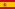 스페인 |
| 2 |
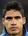 |
Raphaël Varane (라파엘 바란) |
1992. 04. 25 (21) |
DF-CB |
프랑스 |
| 3 |
|
Pepe (페페) |
1983. 02. 26 (31) |
DF-CB |
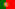 포르투갈 |
| 4 |
|
Sergio Ramos (세르히오 라모스) |
1986. 03. 30 (28) |
DF-CB |
스페인 |
| 5 |
|
Fábio Coentrão (파비오 코엔트랑) |
1988. 03. 11 (26) |
DF-LB |
포르투갈 |
| 6 |
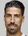 |
Sami Khedira (사미 케디라) |
1987. 04. 04 (27) |
MF-CM |
 독일 독일 |
| 7 |
|
Cristiano Ronaldo (크리스티아누 호날두) |
1985. 02. 05 (29) |
FW-LW |
포르투갈 |
| 8 |
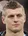 |
Toni Kroos (토니 크로스) |
1990. 01. 04 (24) |
MF-CM |
독일 |
| 9 |
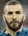 |
Karim Benzema (카림 벤제마) |
1987. 12. 19 (26) |
FW-ST |
프랑스 |
| 10 |
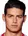 |
James Rodríguez (하메스 로드리게스) |
1991. 07. 12 (22) |
MF-AM |
 콜롬비아 콜롬비아 |
| 11 |
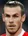 |
Gareth Bale (가레스 베일) |
1989. 07. 16 (24) |
FW-RW |
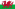 웨일즈 |
| 12 |
|
Marcelo (마르셀로) |
1988. 05. 12 (26) |
DF-LB |
 브라질 브라질 |
| 13 |
|
Keylor Navas (케일러 나바스) |
1986. 02. 15 (27) |
GK |
코스타리카 |
| 14 |
 |
Chicharito (치차리토) |
1988. 06. 01 (26) |
FW-CF |
 멕시코 멕시코 |
| 15 |
|
Daniel Carvajal (다니 카르바할) |
1992. 01. 11 (22) |
DF-RB |
스페인 |
| 16 |
 |
Lucas Silva (루카스 실바) |
1992. 02. 23 (21) |
MF-DM |
브라질 |
| 17 |
|
Álvaro Arbeloa (알바로 아르벨로아) |
1983. 01. 17 (31) |
DF-RB |
스페인 |
| 18 |
|
Nacho Fernández (나초 페르난데스) |
1990. 01. 18 (24) |
DF-CB |
스페인 |
| 19 |
|
Luka Modrić (루카 모드리치) |
1985. 09. 09 (28) |
MF-CM |
크로아티아 |
| 20 |
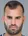 |
Jesé Rodriguez (헤세 로드리게스) |
1993. 02. 26 (21) |
FW-CF |
스페인 |
| 23 |
|
Isco (이스코) |
1992. 04. 21 (22) |
MF-AM |
스페인 |
| 24 |
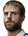 |
Asier Illarramendi (아시에르 이야라멘디) |
1990. 03. 08 (24) |
MF-DM |
스페인 |
| 25 |
|
Fernando Pacheco (페르난도 파체코) |
1992. 05. 18 (22) |
GK |
스페인 |
| 26 |
|
Álvaro Medrán (알바로 메드란) |
1994. 03. 15 (20) |
MF-CM |
스페인 |
| 27 |
 |
Raúl de Tomás (라울 데 토마스) |
1994. 10. 17 (19) |
FW-CF |
스페인 |
| 28 |
|
Guillermo Varela (기예르모 바렐라) |
1993. 03. 24 (21) |
DF-RB |
 우루과이 우루과이 |
| 29 |
|
Eero Markkanen (에로 마르카넨) |
1991. 07. 03 (22) |
FW-CF |
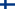 핀란드 |
| 30 |
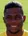 |
Abner (아브너) |
1996. 05. 30 (18) |
DF-LB |
브라질 |
| 31 |
|
Jaime Sánchez (제이미 산체스) |
1995. 05. 11 (19) |
DF-CB |
스페인 |
| 31 |
|
Rubén Yáñez (루벤 야네즈) |
1993. 10. 12 (20) |
GK |
스페인 |
| 31 |
|
Sergio Aguza (세르히오 아구자) |
1992. 09. 02 (20) |
MF-CM |
스페인 |
| 34 |
 |
Diego Llorente (디에고 요렌테) |
1993. 08. 16 (20) |
DF-CB |
스페인 |
| 35 |
|
Lucas Torró (루카스 토로) |
1994. 07. 19 (19) |
FW-CF |
스페인 |
| 36 |
 |
Marcos Llorente (마르코스 요렌테) |
1995. 01. 30 (18) |
MF-CM |
스페인 |
| 37 |
|
Javi Muñoz (하비 무노즈) |
1995. 02. 28 (19) |
MF-CM |
스페인 |
| 38 |
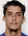 |
Javi Noblejas (하비 노블레아스) |
1995. 01. 30 (18) |
DF-LB |
스페인 |
| 41 |
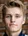 |
Martin Ødegaard (마틴 외데고르) |
1998. 12. 17 (15) |
MF-AM |
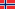 노르웨이 |
| 36 |
|
Derik Osede (데릭 오세데) |
1993. 02. 21 (21) |
DF-CB |
스페인 |
| 43 |
|
Borja Mayoral (보르하 마요랄) |
1997. 04. 05 (17) |
FW-CF |
스페인 |

 Home
Home